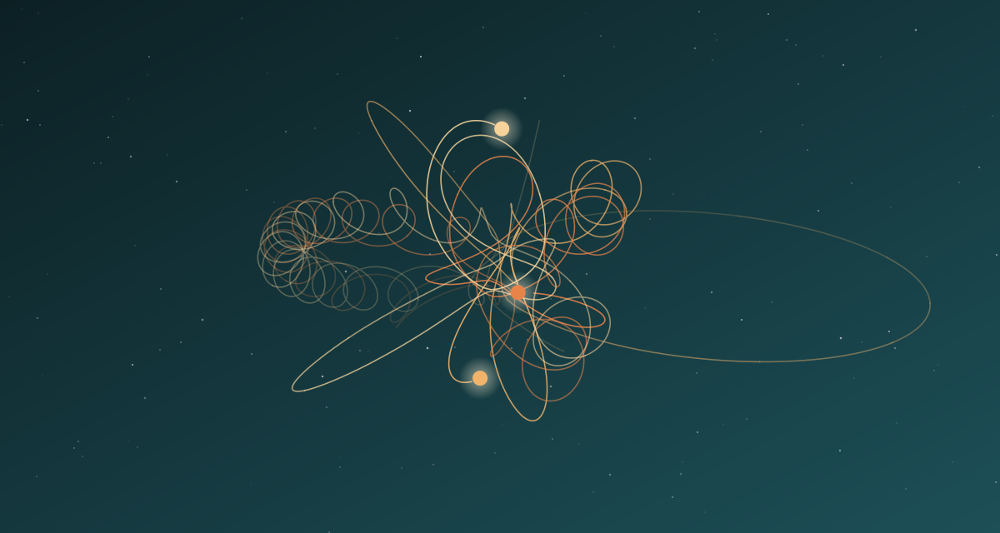

Задача трёх тел · глава 16 из 35
Задача трёх тел

Кратко
В уголовном розыске Ван Мяо слушает Вэй Чэна — мужа Шэнь Юйфэй, математика-самоучку и отшельника. Тот рассказывает, как годами бился над задачей трёх тел, — классической проблемой небесной механики, у которой нет общего решения: движение трёх тяготеющих тел хаотично. Ради вычислений Шэнь Юйфэй добыла ему доступ к суперкомпьютеру. Вэй Чэн признаётся, что ему угрожал незнакомец, а сама жена с пистолетом требовала продолжать работу. Полиция находит Шэнь Юйфэй застреленной у них дома. Вэй Чэн отдаёт Ван Мяо диск со своей моделью.
Главные моменты
- Задача трёх тел — реальная нерешаемая проблема физики, а не выдумка игры.
- Отшельник-математик, для которого задача стала смыслом жизни.
- Шэнь Юйфэй с пистолетом заставляет мужа работать — и сама погибает.
- Внутри «Границ науки» и игры есть враждующие стороны.
Значение
Глава, давшая книге название, соединяет игру с реальностью: кому-то очень нужно решение задачи трёх тел. Убийство Шэнь Юйфэй показывает, что за игрой стоит организация, расколотая изнутри.